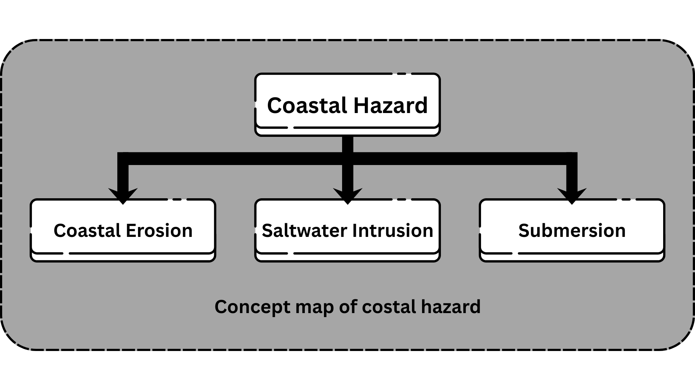

Marine and Coastal Processes in Coastal Communities
Contextualized for Siargao Island (Sta. Monica, Surigao del Norte)
EARTH SCIENCE 11
Marine and Coastal Processes
Welcome to Your Digitized Self-Learning Module
This Digitized Self-Learning Module (DSLM) is designed so you can continue learning anytime, anywhere, even at home. Each part of the module is interactive—you will click, drag, and select answers to explore the lesson step by step.
The module has several sections to guide you:
Pre-Test – a short clickable quiz to check what you already know.
Discussion – clear explanations with visuals, stories from elders (Local Ecological Knowledge), and scientific insights.
Activities – fun and interactive tasks such as dragging, selecting, and case analysis to help you apply what you've learned.
Post-Test – another clickable quiz to check your progress.
Remember: honesty is important. Try answering first before checking any feedback. If you find something difficult, do not worry—review the discussion part or ask your teacher or facilitator for help.
About this Digitized Module
This module was designed and written with you in mind. It will help you explore and understand important concepts in Earth Science, focusing on the nature of marine and coastal processes. The activities are interactive—you will click, drag, and select answers as you go along—so that learning feels more engaging and practical.
The scope of this module allows it to be used in different learning settings. The language is simple and student-friendly, recognizing that learners may have varied vocabulary levels. The lesson follows the standard sequence of the course, but you can also explore the parts in a flexible way, depending on your pace and needs.
This module covers:
Lesson 1 – Effects of Marine and Coastal Processes
After completing this module, you are expected to:
Describe how marine and coastal processes result in coastal hazards (S11/12ES-Ih-38).
Explain how coastal erosion, submersion, and saltwater intrusion occur (S11/12ES-Ih-38).
Integrated Knowledge:
Throughout the lesson, you will encounter not only scientific explanations but also Local Ecological Knowledge (LEK) shared through stories, images, and community practices. This way, you will see how the wisdom of our elders and modern science can work together to protect our coasts and cultural identity.
What I know
Choose and click the correct answer.
1. Maria Leah lives in a coastal village in Sta. Monica where strong waves frequently hit the shore. She notices the shoreline is slowly moving closer to their house every year. What process is most likely causing this?
2. The family of Silverio lives in a low-lying coastal area. During high tides and storms, water often floods their land, making it unusable for farming. What coastal hazard is affecting their area?
3. Emmanuel Joy is assigned to monitor wave activity in a coastal barangay. Which instrument should he use to measure wave height?
4. Several residents in Barangay Tangbo notice a salty taste in their well water after the dry season. Which process is most likely responsible?
5. Two coastal towns — one sheltered by cliffs and another open to the sea — have different erosion rates. Why is erosion faster in the second town?
6. In Barangay T-Arlan, mangroves were planted 10 years ago and typhoon damage decreased. How do mangroves help reduce coastal hazards?
7. A coastal village builds houses along the shore without natural barriers. After a storm, severe erosion occurs. Which human action increased the risk?
8. A farmer near the sea finds his well water is salty in summer. What does this suggest about groundwater?
9. In Magsaysay, elders plant nipa palms along the shorelines as their ancestors did. What is the main benefit of this cultural practice?
10. Jeighna Grey lives near the coast where storm surges are stronger than in inland areas. Why are such coastal communities more at risk?
LESSON 1
Effects of Marine and Coastal Processes
The coast is one of the most active parts of the Earth's surface. In the Philippines, many people live near coastal areas and depend on mangroves, seagrass, beach forests, and coral reefs for food and protection. Local fishers and elders know that mangroves help reduce the impact of strong waves and storms, while coral reefs serve as homes for many fish.
Coastal processes such as waves, tides, and erosion continuously shape the land and sea. These are natural events, but when disturbed by human activities, they can lead to hazards like coastal flooding and storm surges. Knowing both scientific facts and local observations helps communities better understand and protect their coastal environment.
What's In
ACTIVITY 1
Directions: Rearrange the jumbled letters and identify the term being referred to in each of the following items. Write your answer on the space provided. Each clue is based on how both science and local communities understand coastal processes.
1. Local fishers notice the regular rise and fall of seawater, which they use to plan fishing trips. These are caused by the gravitational pull between the moon and Earth.
E I T S D
Answer:
2. Elders recall that during strong winds and storms, large water movements form and crash on the shore.
A W V E S
Answer:
3. Communities hear in the news that the gradual melting of glaciers and icebergs adds to the rise of seawater, which also threatens low-lying barangays.
E S A E V E L E L E S I R
Answer:
4. Farmers and fisherfolk sometimes feel the shaking of the ground when rocks beneath the Earth move suddenly. This refers to the motion of the outermost shell of the Earth.
S A C U R L T N T E V M O M E
Answer:
5. Coastal residents describe this as the sudden rising of seawater during typhoons, often flooding their houses.
U R E G S R M T O S
Answer:
Individual Activity – Coastal Case Analysis
Instructions for Students:
Click or open each case file below. Read the scenario carefully and answer the guide questions.
Revisiting Marine and Coastal Processes (LEK-Integrated)
Have you noticed the terms in the previous activity? They all describe marine and coastal processes. The science that studies these processes in our oceans and seas is called oceanography. It combines knowledge from physics, chemistry, biology, geology, meteorology, mathematics, and even social sciences to explain the connection between people and the sea.
For coastal communities in the Philippines, these processes are not just scientific terms but part of daily life. Fishers observe tides to know the best time to go out to sea. Elders recall strong waves and storm surges that reshaped their shorelines. Farmers in coastal barangays notice sea level rise slowly affecting rice fields and wells. Earthquakes and crustal movements are remembered for causing tsunamis in some areas.
What's New
Coastal processes include waves, tides, sea level change, crustal movement, and storm surges.
●Waves are formed by wind and storms, often noticed during habagat and typhoon season.
●Tides are the rise and fall of seawater caused by the pull of the moon and Earth.
●Sea level change is seen in saltwater intrusion and the gradual flooding of low-lying barangays.
●Storm surge is the sudden rise of seawater during typhoons, known locally as daluyong.
Crustal movement happens when the Earth's plates shift, sometimes causing ground shaking and tsunamis.
What's New
Effects of Marine and Coastal Processes
When these processes intensify, they may result in coastal hazards such as erosion, flooding, and damage to homes, crops, and fishing grounds. Local knowledge, combined with science, helps communities prepare and adapt to these changes.

What's New
Coastal Erosion (LEK in Siargao)
Coastal erosion is the loss or wearing away of land along the shoreline due to the action of waves, tides, currents, strong winds, and storms. In Siargao, residents observe how shorelines slowly change after strong typhoons. Locals recall that during Typhoon Odette (Rai, 2021),
many parts of the coast were eaten away by big waves, washing out coconut trees and damaging houses near the shore.
Fisherfolk also notice that
habagat winds and monsoon waves gradually erode beaches, especially in areas with fewer mangroves or beach forests.
In contrast, elders share that places with
healthy mangroves and seagrass beds are better protected because their roots and thick vegetation help trap sand and lessen wave impact.
What's New
Saltwater Intrusion
Saltwater intrusion happens when seawater seeps into underground freshwater sources, called aquifers.
These aquifers are made of sand, gravel, or rock that hold groundwater, which people usually get through wells.
When saltwater mixes with this groundwater, the water becomes too salty to drink or use for farming. Once an aquifer is contaminated,
it can take years, even centuries, to recover.
In Siargao, many families in coastal barangays rely on shallow wells for drinking water.
Locals have noticed that after strong typhoons or during long dry seasons, their well water sometimes turns salty.
Elders explain that this often happens when the sea pushes farther inland or when too much freshwater is pumped from wells,
allowing seawater to take its place. Farmers also observe that saltier soil near the shore makes it harder to grow rice,
coconuts, or root crops.
What's New
Submersion (LEK in Siargao)
Submersion is the movement of sand and sediments from the beach into the shallow sea.
In Siargao, locals notice this after strong waves and typhoons, when parts of the beach disappear underwater.
Elders share that some shorelines slowly sink or change shape,
especially in areas without mangroves or beach forests that usually help hold the sand in place.